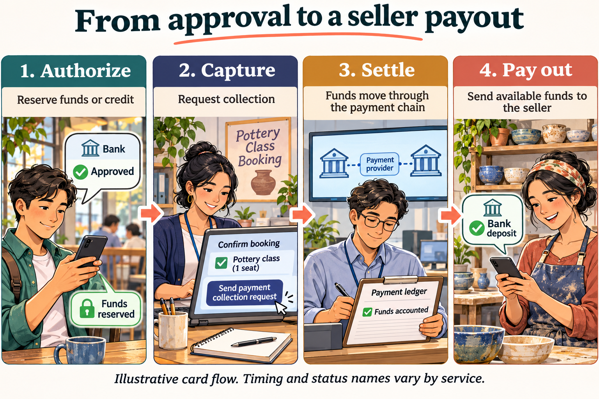
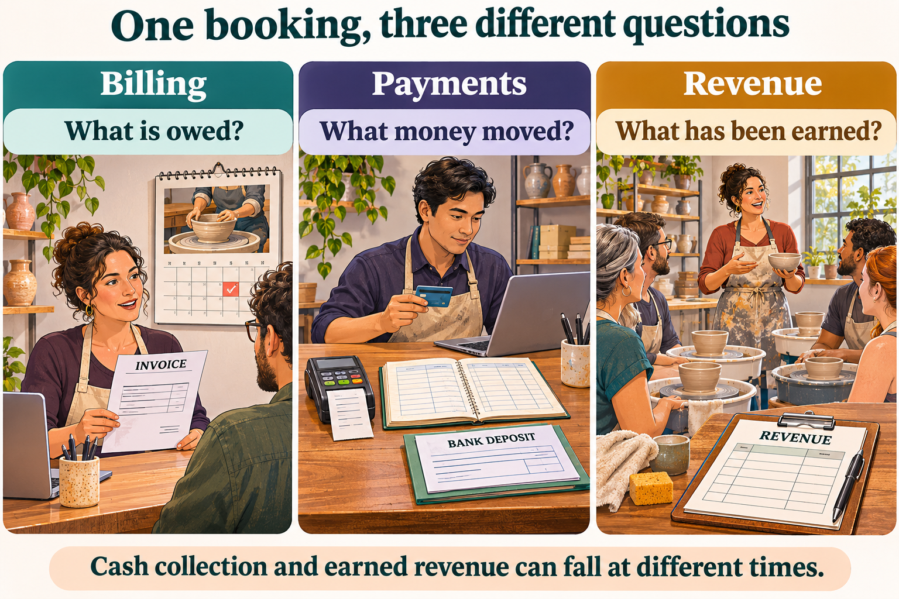

The buyer: Leo
Chooses the class, agrees to the price, and provides a way to pay.
What matters to them
A clear total, one charge, a confirmed booking, and someone who will resolve a problem.
A beginner's guide
Who this is for
Curious readers from another field. No knowledge of banking, accounting, or software development is assumed.
What this guide covers
A practical introduction to accepting payments, charging recurring bills, paying sellers, and explaining the resulting money movements. The main example uses an online card payment in euros; bank transfers, local payment methods, currencies, and country rules can behave differently. Consumer lending, investment services, and detailed tax or accounting rules sit outside this introduction. ClassLane and all its people, prices, and commercial terms are fictional teaching examples.
01
Explain who participates in a payment and who is responsible to the buyer.
Distinguish a bill, a payment approval, collected funds, a seller payout, and earned revenue.
Follow a marketplace sale through a refund and the checks that make its records trustworthy.
Recognize why faster payments, fewer checks, and flexible pricing each create tradeoffs.
02
Leo books a pottery class for €80. His phone says the payment succeeded. Nadia, the teacher, wants to know when she can spend her share. ClassLane, the booking platform, needs to retain its commission and explain every euro. Payments and revenue infrastructure is the collection of services and records that makes these promises dependable.
The visible checkout is only the beginning. Someone must decide whether to accept the payment, move funds between institutions, calculate each party's share, and handle problems afterward. Businesses that charge monthly or by usage also need to calculate what is owed before collecting it. Finance teams need records that connect all of this to their bank accounts and accounts of income.
03
Chooses the class, agrees to the price, and provides a way to pay.
What matters to them
A clear total, one charge, a confirmed booking, and someone who will resolve a problem.
Provides the class. In this example, she is clearly identified as the seller to Leo.
What matters to them
Reliable payment, understandable deductions, and enough available money to buy materials.
Connects buyers with teachers and coordinates bookings and payment instructions.
What matters to them
Completed bookings, its commission, trusted sellers, and manageable losses and support costs.
Supply services for calculating bills, accepting payments, recording balances, or paying recipients. A business may combine several providers.
What matters to them
Service fees, reliable operations, and controlling the risks they accept.
The issuer provides Leo's card; the acquirer serves the merchant side. The card network connects participants under shared rules. Banks also receive seller payouts.
What matters to them
Valid instructions, available funds or credit, security, and meeting their obligations to other participants.
Mina resolves booking and payment exceptions. Noah checks balances, costs, bank deposits, and accounting records.
What matters to them
A traceable explanation of what happened and a safe way to correct mistakes.
04
Billing calculates and communicates what someone owes. Payment attempts to collect it. An invoice is a bill, not proof that money arrived.
For example
ClassLane presents Nadia's €80 bill for Leo's booking. In an alternative business model, it could bill teachers monthly for software, or charge according to their number of bookings. Those models need billing rules before payment collection.
Why it matters
A correct payment can collect an incorrect bill. Usage pricing also needs trustworthy counts, prices, and billing periods.
For the card flow here, authorization asks the issuer to approve the payment and reserve funds or credit. Capture submits the approved amount for collection. They can happen close together or separately.
For example
Leo's €80 is authorized while ClassLane checks the last seat. If the seat is unavailable, it cancels the authorization. If available, it captures the payment.
Why it matters
Approval can expire, and collection can fail. Neither stage alone says that Nadia has received a bank deposit.
Settlement moves funds through the payment chain and resolves amounts owed between participants. A payout sends available funds to a recipient, such as Nadia's bank account. Providers use these terms with different reporting boundaries.

A simplified card flow: approval, collection, settlement, and payout each need their own evidence. Timing and status names vary by provider; failures and reversals are covered in the walkthrough.
Click the image to open it in a new tab.For example
Funds from Leo's payment become available in the provider's balance records before Nadia's scheduled bank payout arrives.
Why it matters
A scheduled or submitted payout is not necessarily a completed deposit. Timing depends on the method, bank, currency, and account eligibility.
A ledger records changes to what each party holds or owes. A balance summarizes those entries. A split allocates a payment between parties; pending amounts may not yet be available to withdraw.
For example
The teaching example allocates €72 to Nadia and €8 to ClassLane before processing costs, taxes, or later adjustments. Splitting the record does not mean two bank transfers happened immediately.
Why it matters
The €80 sale, the platform's €8 share, and its eventual profit are different amounts. A provider balance is not automatically an ordinary bank account.
The merchant of record is the business the buyer understands they are buying from and that takes responsibility for the transaction, including recourse for problems. The commercial arrangement and the customer experience must agree.
For example
Our example identifies Nadia as the seller. ClassLane's payment configuration must reflect that arrangement. A different service might itself become the merchant of record under its contract.
Why it matters
Sending funds to an account does not decide who sold the service. Delegating payment processing alone does not transfer every seller responsibility.
Authentication checks that a payer is entitled to use a payment method. Tokenization substitutes a reference for sensitive payment details in a particular system or use.
For example
Leo approves a request in his banking app. ClassLane uses a provider reference rather than keeping his full card details itself.
Why it matters
These measures address different problems. A successful identity check does not guarantee funds, and a token does not remove every security obligation.
A refund returns money through a seller-authorized process. A dispute begins when the buyer challenges a payment through their payment provider; it can lead to a reversal, often called a chargeback for cards.
For example
Nadia agrees to return €20 after shortening the class. Alternatively, Leo might challenge an unrecognized charge with his bank. These are different processes, not two automatic refunds.
Why it matters
Teams must track each case to avoid duplicate repayment and preserve evidence. Money already paid to a seller may need to be recovered.
Reconciliation matches records and explains differences: orders, provider entries, fees, refunds, and bank deposits. Revenue recognition determines when and how much income is earned under the applicable accounting rules and commercial arrangement.

Billing, money movement, and earned revenue are separate views of one booking. The applicable accounting rules and each party's commercial role determine revenue treatment.
Click the image to open it in a new tab.For example
Noah traces Leo's €80 to the split and later refund. He separately considers what ClassLane earned by providing its service. Collecting payment for a future class does not by itself settle that accounting question.
Why it matters
Money collected, money available, money owed to sellers, and earned income answer different questions.
05
These selected milestones explain today's layers. The US card examples are not a universal history: cash, transfers, direct debits, and local payment networks developed along other paths.
Bank of America launched BankAmericard in California in 1958; the program later became Visa. It is one example of card relationships expanding beyond an individual shop.
What this helps explain
Today's checkout relies on institutions and shared rules that connect buyers and sellers who do not bank together.
Five major card brands formed the PCI Security Standards Council to manage the evolution of a shared payment-data security standard.
What this helps explain
This reinforced shared security responsibilities across organizations handling card data. A checkout designer cannot treat payment security as a local feature.
Stripe launched Connect in 2012, one example of providers making payment services easier for software platforms to integrate for their users.
What this helps explain
A booking platform could coordinate payments for many sellers. Identifying those sellers, tracking their balances, and allocating responsibility became central product concerns.
Apple Pay launched in the United States in October 2014, using device-specific account numbers and transaction security codes instead of sharing the actual card number with merchants.
What this helps explain
The gesture changed from presenting a card to using a device, while banks, networks, payment records, and later settlement still mattered.
06
Nadia offers a pottery class through ClassLane. Leo books a seat. Mina handles operations; Noah handles finance. All people and amounts are invented. The simplified agreement gives Nadia 90% and ClassLane 10%, with the same proportions applied to a later partial refund. Processing costs and taxes are left out of the arithmetic, not assumed to be zero in real life.
Before listing Nadia, ClassLane and its provider collect the required business and identity information and check her payout destination. The buyer-facing terms identify her as the seller.
Why this step matters
Creating a login does not automatically enable payment acceptance or payouts.
Leo sees the €80 total, class date, seller, and cancellation terms. He submits his card payment and completes any requested bank authentication. The issuer approves the authorization.
Why this step matters
The commercial promise and payment request must describe the same purchase. A declined request needs a clear recovery path.
ClassLane confirms availability and requests capture. Its server records the provider's successful payment result and confirms the booking. If Leo refreshes the screen, the system reuses the same booking and payment references.
Why this step matters
A screen refresh must not create another charge or reserve another seat.
The records allocate €72 to Nadia and €8 to ClassLane. Noah can distinguish amounts recorded from amounts available. The provider and banking participants complete their settlement processes.
Why this step matters
Both parties can see their entitlement without pretending that the cash has already arrived in their banks.
Once the funds are available and her account is eligible, the provider sends Nadia's payout on the agreed schedule. The records track its progress and any bank return.
Why this step matters
Nadia needs usable money to run her business. Mina needs a precise status if Nadia reports a missing deposit.
The class is shortened, and Nadia agrees to a €20 refund. ClassLane records reductions of €18 to Nadia's share and €2 to its own. Because Nadia was already paid, the agreement must provide a way to fund and recover her portion, such as an available balance or later earnings.
Why this step matters
Returning money requires funding now, even when the original sale has already been paid out.
After the refund completes and adjustments are recovered, Leo has paid €60 net. Nadia's share is €54 and ClassLane's is €6, before the omitted costs and taxes. Noah matches the booking, provider entries, refund, recoveries, and bank movements, then applies the relevant accounting treatment.
Why this step matters
A correct final total needs a traceable history. Corrections add records; they must not erase what originally happened.
The outcome
Leo receives the agreed adjustment, Nadia understands her final proceeds, and ClassLane can explain both its share and the timing of the cash. If recovery or bank delivery is still pending, the records show that outstanding obligation instead of declaring the whole case finished.
07
Buyers gain convenience and recourse. Sellers reach customers and receive usable funds. Platforms earn fees by organizing the service. Providers charge for processing, software, or related financial services.
For example
ClassLane's €8 initial commission must fund its own costs. It is not €8 of profit.
Depending on the arrangement, costs include issuer and network charges, provider fees, currency conversion, identity checks, support, fraud losses, and dispute handling. A quoted processing price may not cover every cost.
For example
A cheap payment attempt is poor value if legitimate buyers abandon checkout or staff spend hours repairing records.
Sellers prefer early payouts. Platforms and providers need funds for reversals and may retain reserves: amounts held back for possible future obligations. Someone must finance any timing gap.
For example
Paying Nadia sooner helps her buy clay, but ClassLane still needs a workable response to the later €20 refund.
08
A provider must judge incomplete signals quickly. Criminals and legitimate buyers can look similar.
The competing needs
Extra checks can stop fraud and also discourage real customers.
In practice
Leo's unfamiliar device triggers another verification step while the last class seat is waiting.
How people respond, and its limits
Use checks appropriate to the risk, clear recovery options, and review of losses and rejected legitimate attempts. No rule perfectly separates the two.
Messages can arrive late, twice, or in a different order. A booking system and a bank do not update together.
The competing needs
Immediate confirmation feels good, but premature certainty can produce duplicate charges or unpaid bookings.
In practice
The payment succeeds while ClassLane temporarily loses its connection to the provider.
How people respond, and its limits
Use stable references so repeating an instruction has one financial effect, track pending states, and reconcile later. Staff still need tools to resolve exceptions.
Subscriptions, usage counts, discounts, and mid-period changes create several possible explanations of the amount owed.
The competing needs
Flexible pricing can fit customers better while making bills harder to predict and verify.
In practice
If ClassLane charged by booking count, a duplicated booking event could overstate a teacher's bill.
How people respond, and its limits
Define what counts, preserve pricing versions and corrections, and show an understandable breakdown. Accurate collection cannot repair a bad pricing rule.
Countries, banks, currencies, online checkouts, and physical terminals have different requirements and failure modes.
The competing needs
One consistent product is easier to use, but local differences cannot always be hidden.
In practice
An overseas teacher may need different verification, while an offline card reader can record a sale before obtaining an online approval.
How people respond, and its limits
Check eligibility per service and country, expose meaningful restrictions, and set explicit offline limits. A successful local trial does not prove worldwide availability.
09
A better way to understand it
The screen may confirm a payment stage while settlement, balance availability, or bank delivery is still pending.
A better way to understand it
Billing software, payment processing, orchestration across processors, and merchant-of-record services have different responsibilities. Compare the actual service and agreement.
A better way to understand it
It creates further money movements and records. The original sale, costs, payout, and recovery may all remain relevant.
10
Follow both the money and the responsibilities: the checkout alone reveals neither.
A bill, approval, collection, balance, payout, and earned revenue describe different facts.
Refunds and failures are ordinary parts of the lifecycle, so design the records and funding arrangements for them.
Judge success through completed purchases, usable seller funds, controlled losses, and records people can explain.
11
Pause and think through each situation, then open the answer.
No.
The reasoning
Authorization approves and reserves the amount. Capture, settlement, availability, and payout still need their own evidence.
The collection may be correct while the bill is wrong.
The reasoning
Avoiding duplicate payments does not fix duplicated usage. The bill's underlying records must also be checked and corrected.
€54 and €6, before the excluded costs and taxes.
The reasoning
The refund reduces their original shares by €18 and €2. If Nadia already received €72, the €18 adjustment needs recovery; changing a displayed balance alone does not recover cash.
No.
The reasoning
The customer-facing commercial arrangement establishes responsibility. Payment routing and account configuration must reflect that arrangement.
12
Who does the buyer understand they are buying from, and who resolves a complaint?
Which event proves payment, availability, and final bank delivery in this particular service?
Who funds a refund after payout, and what happens if recovery fails?
Can finance trace one order through fees, refunds, balances, and the bank statement?
13
See the distinction between authorization, capture, settlement, and failure in an actual provider's statuses.
Follow splits and reports, including the difference between booking a balance entry and making funds available.
Connect a recurring agreement to invoices, payment attempts, and subscription status.
Understand why customer-facing responsibility must be decided before choosing a platform's payment configuration.
Explore accounting for earned revenue as a separate concern from collecting and paying out money.